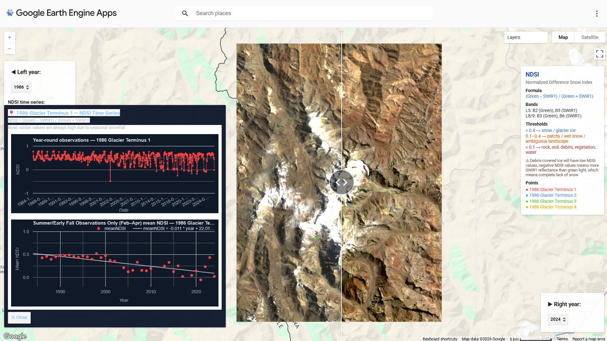
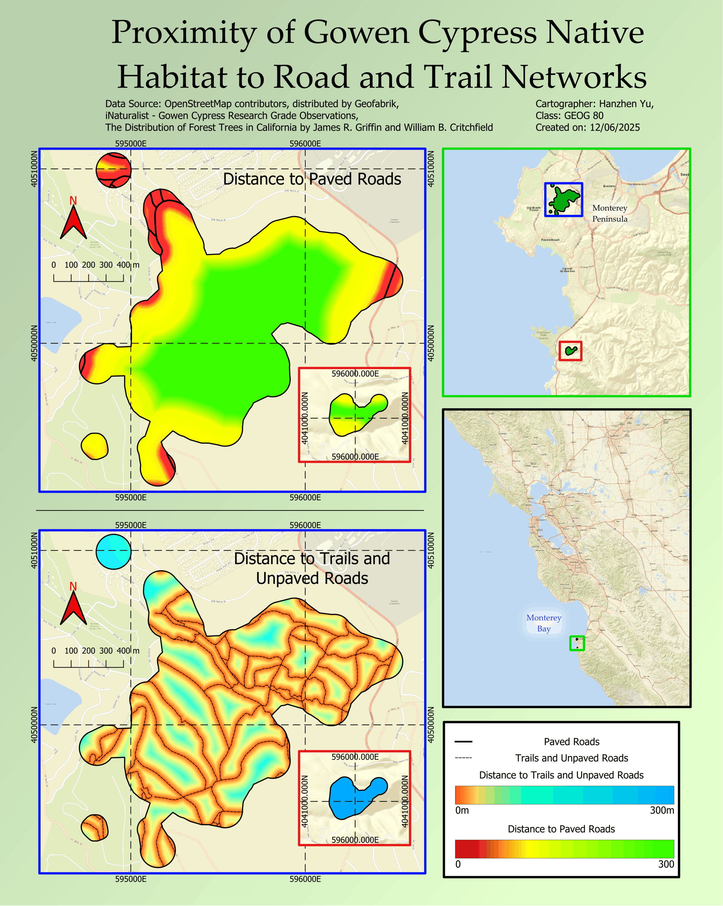

Work in progressResearchTerrain analysis3D GIS
Automatic Mapping of Drainage Basins for Rock Glaciers
Some ArcGIS 3D scenes from my poster.
View project →UC BERKELEY · DATA SCIENCE + GEOGRAPHY DOUBLE MAJOR · GIST MINOR
A portfolio of spatial analysis, remote sensing, cartography, web maps, and research projects.
Projects are organized by the problem and method rather than by software. Use the filters to browse different kinds of GIS work.
Some ArcGIS 3D scenes from my poster.
View project →
Using Landsat, NDSI, and elevation data to explore long-term snow and glacier cover change, snowline elevation, and former glacier terminus points.

Click for full PDFAn ArcGIS StoryMap examining spatial patterns of health risk in California farming communities.
A developing historical-GIS project using georeferenced archival maps and modern spatial data. The project page is set up as a process notebook so unfinished research can still be shown clearly.
View process →I am interested in using GIS, geography, remote sensing, and spatial data to understand environmental change and communicate place-based questions. This site collects both finished work and selected projects in progress.
Edit this paragraph later with your school/program, research interests, career direction, and the kinds of GIS work you want to do.